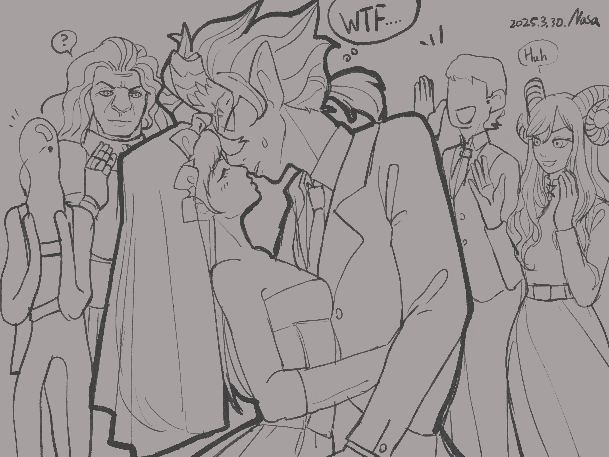
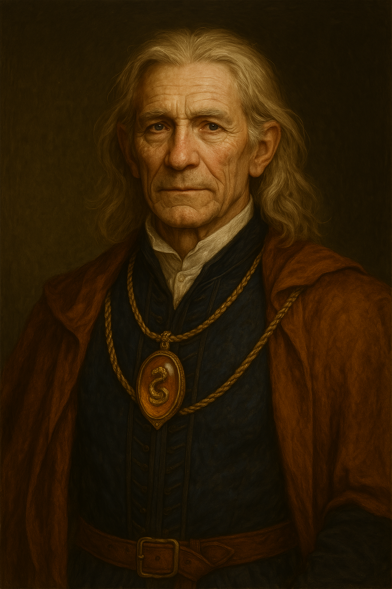
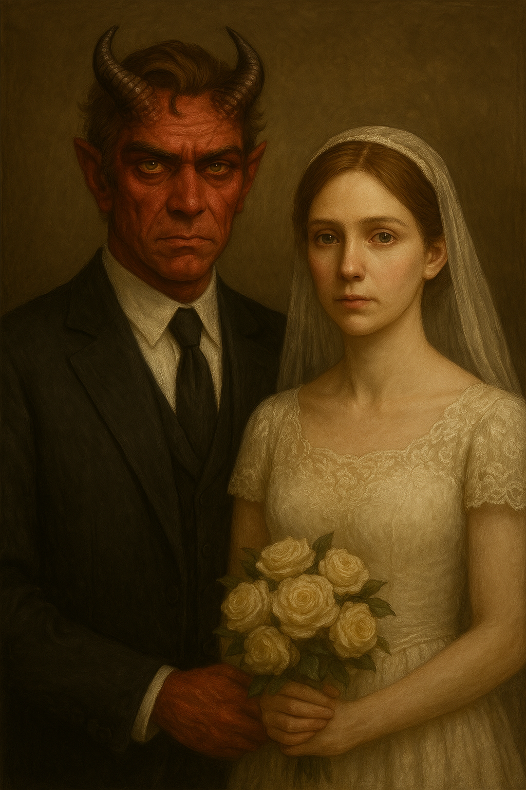
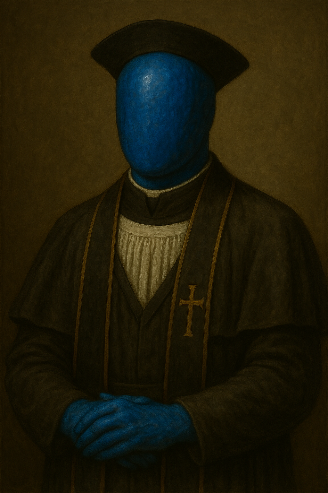
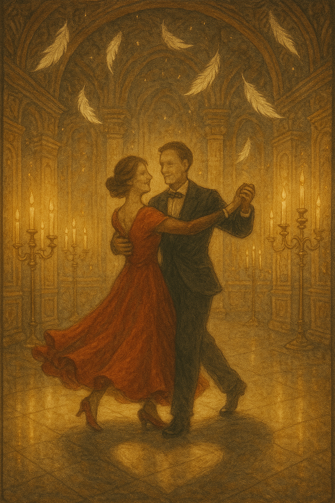
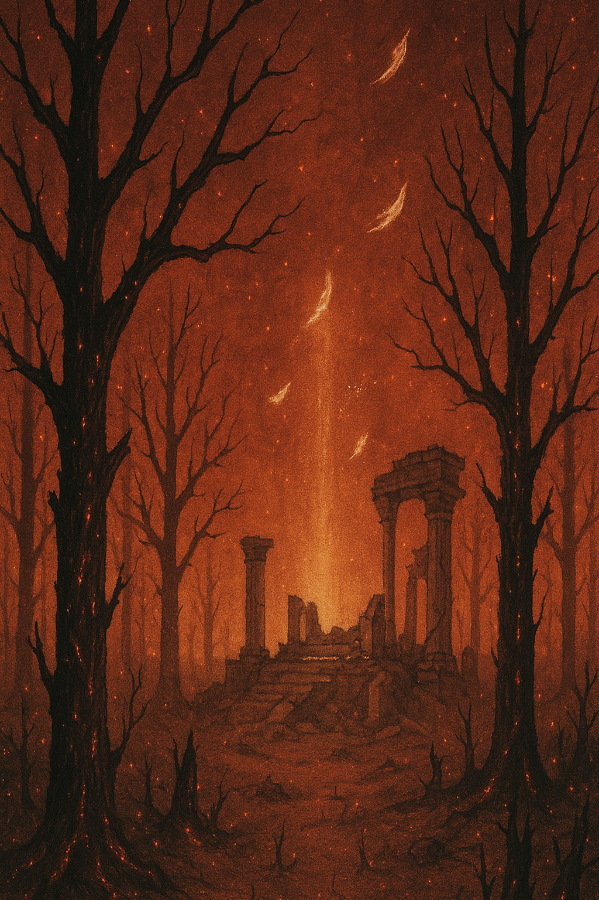
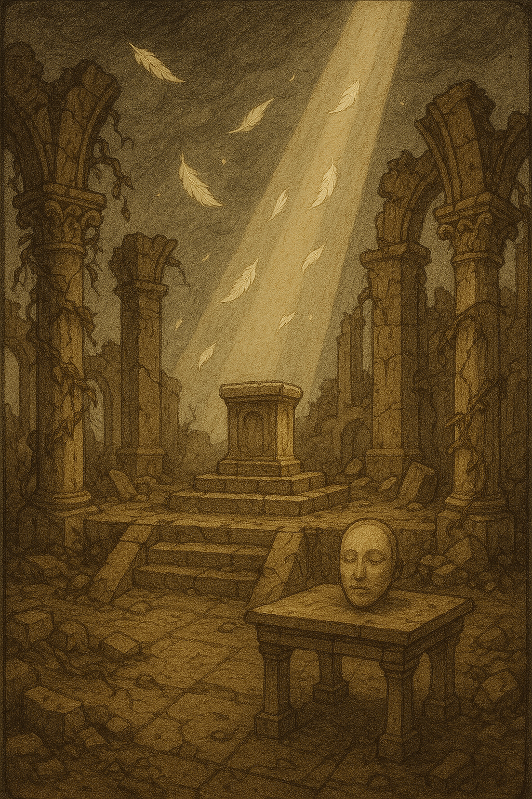
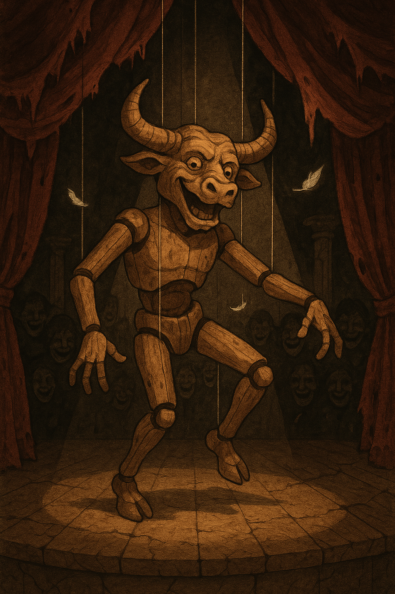

Chapter 2: Fate of the Destined Past
Requiem of the Feathered Estate

Requiem of the Feathered Estate
15051.09.14
當 Lott 再次回過神來，酒館內只剩下他與酒保了。儘管他知道酒精已無法麻痺他的情緒，他還是數不清自己到底喝了幾杯。Lott 站了起身，想換到身後的圓桌去。定睛一看，其中一張圓桌上，放了一本破舊的筆記本。
Lott 拾起筆記本，封面是空的，但翻開，裡面是滿滿的生物筆記，用 Lott 熟悉的筆跡，理性地寫著某人的觀察，以及那人的註記。Lott 翻到其中一頁，寫著的物種是「魔人」，裡面的文字讓他想起了什麼，卻又說不明白，只感到內心滿滿的悸動。而最後一頁，則畫上了 Lott 的肖像畫。
有人拍了拍 Lott 的肩，他一回頭，是滿面愁容的 Lysien。Lysien 提醒著他，下次別忘記帶走自己的筆記本了。Lott 感到困惑，他知道這不是屬於他的東西，但 Lysien 卻非常明確的告訴他，那是 Lott 自己帶來的。而不論這是否是 Lott 自己的東西，他很清楚，他會非常珍惜它。畢竟那與他喪失的某段珍貴回憶有很大的關聯。
Lott 在小圓桌做了下來，Lysien 承諾 Lott 可以在這裡待到他想離開為止，Lott 便拿出了一塊小木頭，開始雕刻，Lysien 則悄聲離去。
「我……還有機會見到他嗎？」Lott 在 Lysien 推開門前問到。
「你知道，你可以待在這裡，直到你想離開為止。」Lysien 回應他。「多久都可以。」
看見 Kudan 與 Ubbo 走入了劇場，站在門口的 Psyber 卻被長廊上的某個東西吸引住了。那是一幅剛才還不存在的肖像畫。畫中的人不是別人，而是……說來也怪，晚餐時，他們的夥伴 GoR 不是還在嗎？怎麼就不見人影了？畫中這個 GoR 怎麼好像已步入老年，還穿得一身正裝？怎麼看都不對勁？

Psyber 思忖著，還是決定向內心最可靠的 Nessis 祈禱。他感受到莊園內還存有 Nessis 的神力。閉上眼，Psyber 跟隨著 Nessis 賜予他的直覺向前走。睜開眼，他卻發現一名羽僕正領著他，最終他們停在一扇門前。羽僕將門打開，伸出手，示意 Psyber 進入。想著這也是 Nessis 引導他來的地方，Psyber 就這樣摸黑走入房間內了。
房內一片漆黑，只有正中央有一簇火苗。但當門關上時，周圍瞬間化作一片森林，那是 Nessis 權能的象徵。Psyber 還來不及喘口氣，就發現正中央的火苗已換成了一株盆栽，生機盎然。但森林的周圍，卻開始出現火光。
Psyber 走向盆栽，他聽見了一道他認不得的聲音，說著：「你是遵循著自己的意志，追尋 Nessis，還是只是盲目的跟隨著別人叫你做的事呢？」Psyber 回頭跑向來的方向，卻發現那道格格不入的門轉不開。
火勢漸漲，Psyber 趕緊跑向盆栽。
「燃燒我，或是成為我。」他聽見自己的聲音，從盆栽的方向傳來。眼看火就要燒到盆栽了，Psyber 抱起盆栽，跑向那扇門，門把輕易的被轉開。Psyber 踏出門檻，回頭看向焚燒過後的房間，大聲喊道：「我的生命是 Nessis 救來的，我遵循 Nessis 之道，不是因為任何人要我這樣做，而是我自己的決定！」他便步回長廊去。他手中的盆栽在他回到長廊時，化成了一片金色的葉子，Psyber 謹慎地將它收好。
重新回到劇院門口，Psyber 看見 Kudan 正僵直地站在舞台上，一旁的小丑正在鼓譟著觀眾們鼓掌。Kudan 默默走下台，徑直朝向出口走去。在舞台前丟小丑石頭的 Ubbo 則跟上 Kudan。
三人會和後，Psyber 向他們兩人指著他看見的 GoR 的肖像。Kudan 皺起眉，Ubbo 則翻起畫框，著急地看著畫框喊著：「你怎麼跑進畫裡去了？」一旁的羽僕小聲卻說著 Ubbo 不可以破壞畫像，但 Ubbo 直接把畫連同畫框摘下，羽僕也沒辦法做什麼。
Lott 完成了他的木雕，那是一隻鳥人的半身雕刻。既熟悉，又陌生，就好像那是他潛意識的某個重要的東西，但他在怎麼努力都還想不起來。Ubbo 之前召喚出的烏鴉看見完成的雕刻，夾起雕刻的脖子處，朝著不知何時被打開的酒館門口跳去，Lott 小心翼翼地追上，祈求木雕不會被牠破壞，也就跟著跑回了長廊。從烏鴉口中拿回了木雕，Lott 趕緊把它收好。
另一名羽僕在長廊上喊著晚餐已經準備好了，Ubbo 一聽，便夾著 GoR 的肖像畫衝向餐廳。此時 Lott 正好從酒館跑了出來。看見熟悉的夥伴們正步向餐廳，他也就跟上了。
走入餐廳，門口旁，一名羽僕將餐盤與餐具紛紛遞給踏入的賓客，Ubbo 趕緊衝向餐點區，將豬肋排夾了幾塊到他的盤子內，然後將原本拿來盛裝給賓客的鐵盤整盤端走，只留下他的小瓷盤放在桌上。
冒險者們靠向牆邊，互相交換著資訊。同時，Ubbo 也不忘記餵食「被困在畫裡的 GoR」他拿的豬肋排，搞得畫像一團亂。
突然間，熟悉的小丑再次出現在 Kudan 面前，嚇著了大家。「我們的主角上次鬧了場，這次要不要換個劇本演啊？」小丑戲謔的看著 Kudan，Ubbo 則拾起他吃剩的豬肋排骨頭，丟向小丑。Kudan 回過神來，也朝向小丑施展魔法。一瞬間，小丑滑稽地定格，然後倒下，但他身後，一個姿勢一模一樣的小丑拍了拍手，看著群眾，喊著「謝謝我們主角的演出！」對冒險者們一一鞠了躬後便消失在人群之中了。倒在地上的小丑，只留下一套小丑裝，Psyber 將它收起。
冒險者們重新回到長廊，而在原本 GoR 的畫像處，已經掛了另一幅畫，畫中的是一名中年的紅色魔人男子，頭上一支角斷了，套上了環，像極了 Lott。不過表情嚴肅的他身穿一套西裝，而且身邊還站了個神情相似的人類女子，身著婚紗，兩人牽著手。Lott 一看大驚失色，人類、女性，這都不是他心之所向，這到底是怎麼回事？

Lott 驚慌地看著四周，卻發現畫中的女子竟然出現在他的身後，哭泣著。賓客們紛紛劇了過來，大聲地祝賀著 Lott 新婚快樂，不知道從哪裡走來的樂隊更開始奏樂。Lott 慌亂，大聲問著女子是什麼人？而女子哭得更傷心，念著 Lott 怎麼會連自己的老婆都認不得？女子 喊著要樂隊停下來，他覺得太尷尬了，但樂隊停下來後，現場的一片寂靜更為尷尬。Lott 也發現自己竟然換了身與畫中相同的西裝。為了化解危機，Lott 決定做他不想做的事—他俯身向女子親吻，女子瞬間破涕為笑，眾人也大聲歡呼。
接著 Lott 以上廁所為藉口，朝著餐廳方向跑去。其他冒險者們也隨後跟上。關上餐廳的門，Lott 大力喘氣，確保「新娘」沒有跟上。但他也發現他原本的衣服不僅沒有在身上，也沒有在他的背包內，他只能繼續穿著這套西裝了……。
餐廳內，冒險者們看見 Lysien 自在地穿梭著，手上拿著一本筆記本，時不時停下來寫一寫。
「當羽落下，我便不再為人；那條路，將無人同行……」
「他們說，我將成為永恆。但若永恆是孤單，那又有誰能見證我的愛？」
「我將是愛的化身，或只是愛的遺骸……」
Lott 決心必須離開莊園，儘管他念念不忘那名鳥人。踏回長廊，他們又發現有個詭異的肖像畫了，上面是與 Ubbo 相似的流漿人，但卻很明顯穿著的是不同於他所信仰的 Phyneal 的宗教服裝，很顯然是個神職人員的模樣。姿態肅穆，與混亂而愚蠢的 Ubbo 大相徑庭。Lott 決定將這幅畫取下。

這時，Lott 聽見一個年老的聲音從他背後傳來。「有些事情，你們該知道。」他一回頭，發現一個矮小的斗篷人。斗篷下的臉，是他的師父，伊，不過年紀非常非常大，還拄著拐杖。Lott 看了趕緊扶著伊。
同時，其他冒險者們看見的，卻與 Lott 不同。Psyber 和 Ubbo 都看見了一名他們不認得的人，Kudan 則看見了一位他憎恨不已的人：Sholo。
Lott 跟著伊，走向一扇門，Psyber、Ubbo 也跟上，Kudan 雖然不想跟著 Sholo 走去，但也好奇這是怎麼回事，於是殿後。
斗篷人推開門，緩緩走入昏暗的房間。
Lott 走入了房間，裡面有一張木桌。伊坐在木桌後，示意 Lott 坐下。伊拿出一疊紙牌，翻了三張放在桌上，讓 Lott 選擇。Lott 選了中間一張，伊將它翻開。

「Lott，這是你的卡，無盡的雙人舞。那暖的手，熟悉的旋律……如果我說，你可以永遠留在這裡，你會怎麼做？」
Psyber 走入房間，卻沒見到在他前面的 Lott，只有斗篷人坐在桌子後。Psyber 仔細一看，這人很明顯是 Nessis 的神職人員，只是他認不出來。
斗篷人遞給了 Psyber 一疊牌，讓他隨意選一張。

「Psyber，這是你的卡，焚燒的森林。森林已被燒盡，而你聽不見涅西斯的聲音。如果涅西斯不再與你溝通，你還會信仰他嗎？」
當 Ubbo 坐下時，他發現坐在他對面的，是與他相同的流漿人，就像在模仿他一樣。同時，他也聽見身旁傳來嘻笑聲。他一看，幾隻孽物在他身邊遊走，倒也令他感到安心。
流漿人將牌遞給 Ubbo，示意他切牌。Ubbo 切了一次後，流漿人便將牌翻開。

「Ubbo，這是你的卡，無神的殿堂。你走進月神 Phyneal 的聖所，卻發現月神不曾存在，一切，都只是你的幻想。你該怎麼做？」
「月神是真的！你騙人！」Ubbo 大喊，拿出武器，將眼前的木桌劈成一半。被劈開的木桌化成流漿，落在地上。
Kudan 走入房間內，有所不甘地坐了下來，瞪視著他恨的那人—他這輩子第二恨的人。
「Kudan，你坐啊。」Sholo 邪佞的笑著。「來，選一張牌吧！」他洗了洗牌後，將牌隨機的丟在桌上，但 Kudan 雙手叉腰，繼續瞪著他，沒有要做出選擇。「你不選的話，我就幫你選囉？」

「Kudan，這是你的卡，操線的木偶。你認為演員是什麼？是自由的創作者，還是受劇本操控的傀儡？」
在 Lott 依依不捨地離開伊之前，他知道了一件事：那不是他的伊。那只不過是騙人的魔法罷了，但他還是無法壓抑住內心悸動的情緒。
踏出門，Lott 看見其他冒險者們在外面等著。
冒險者們在長廊上，不斷聽見羽僕們竊竊私語，說著「雖然時間還沒到，但需要開始準備了」、「再不準備就要來不及了」、「已經開始了嗎？還是已經結束了嗎？」等的話語。他們攔下一名羽僕，詢問是什麼事情。羽僕解釋是稍晚的儀式。
冒險者們詢問羽僕儀式場地在什麼地方？羽僕便帶他們前往一扇鎖上的門，然後就離開了。
門把轉不動，但開鎖是 Lott 的專長。他輕鬆的用了自己的工具，把門鎖解開，大家一起踏入這個偌大的陰暗的空間。
門在背後關上，視野內，是一張如同王座的座椅，大小卻有點小，頂多只能坐一個未成年的瘦弱孩子。
Kudan 繞到座椅前，發現椅子上放了一本筆記本，而更令他感到在意的是，那張座椅的後方，竟然有一扇張開翅膀的造型，誇張而狂妄；椅子手把的兩側，竟然還有鐵鍊。
Kudan 拿起筆記本開始翻閱，Ubbo 則索性坐在座椅上，玩弄著鐵鍊。筆記本的外型，與冒險者們看見 Lysien 時不時抄寫的那本筆記本相同，而內容，則很顯然的是他的日記和情詩。
Kudan 發現其中一頁，畫著他眼前的座椅，而上面，坐著的是一名翅膀垂落的瘦小女子，長髮散落在他垂下的頭前。
「天使」是他第一個想到的字眼，也是 Lysien 曾說過 Phyneal 曾賜予他，卻又奪走的。
而筆記本的最後一頁，則留下了這樣的字句：「世上最可怕的，不是沒有人愛，而是愛過之後，發現你的愛，只是想像。」
Ubbo 聽見遠方傳來腳步聲。定睛一看，Lysien 沈穩的朝冒險者們走來。
「你們提早來了，儀式還沒準備好。」Lysien 說道。「不過沒關係。」
冒險者們不清楚這儀式要做什麼，但很顯然 Lysien 也沒有要透露。Ubbo 也知道這和 Phyneal 常見的靈魂交換儀式是不同的。
「你們先出去吧，等到時機到了，羽僕們會再喚你們來的。」Lysien 請示冒險者們離開。「反正儀式還沒開始，你們待在這裡什麼也看不到。」
冒險者們知道留下來也沒有意義，便轉身離開。但在推開門的前一刻，Ubbo 轉頭一看，Lysien 的身影在黑暗之中，似乎頭邊散出了淺淺的光暈。